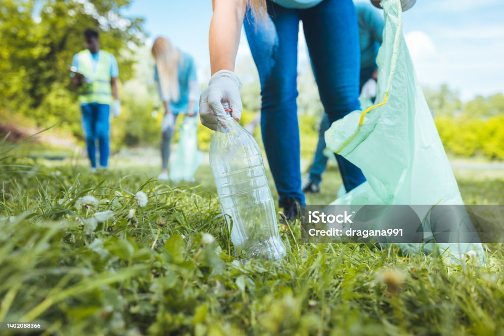

According to the facts, 50% of our product we bought are being discarded within 6 months. We can easily reduce our waste as much as we can by considering "Is it necessary?" before your every purchase.
Also, reusing the products we buy as much as possible helps to reduce waste. For example, donating your clothes or durable goods.
Every community has a cleanup commitment, by jouning, you will understand how much trash is being discarded in your environment. Also, you will be able to reduce the waste that eventually reaches the ocean.
